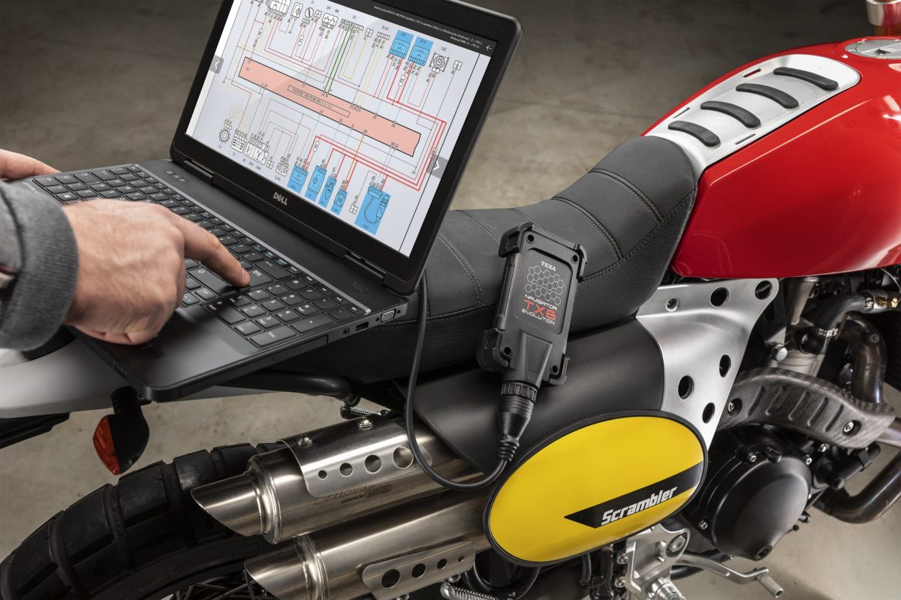
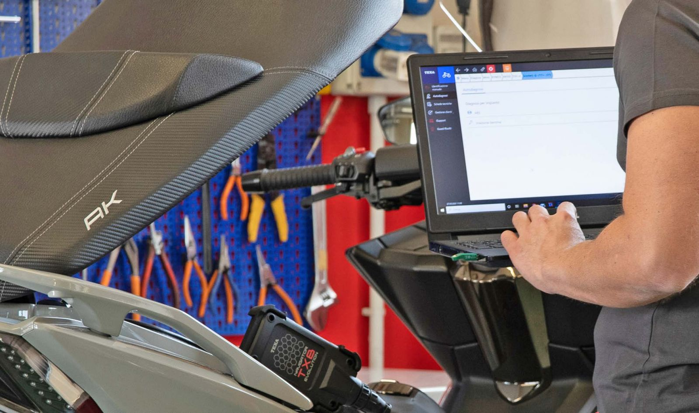

Quando la moto non va “come prima” ma non si capisce il perché, si parte da una diagnosi fatta con calma.
Problemi tipici che trattiamo
- Difficoltà di avviamento a caldo o a freddo.
- Vuoti in accelerazione, strattoni o scoppiettii.
- Calo improvviso di prestazioni.
- Rumori metallici, vibrazioni insolite.
- Perdite di olio o liquido refrigerante.
Come affrontiamo la diagnosi
Il lavoro di diagnosi viene fatto per gradi, senza iniziare a cambiare pezzi a caso:
- Ascolto dei sintomi spiegati dal pilota.
- Controlli di base (filtri, candele, livelli, gioco comandi).
- Controlli meccanici o elettrici mirati, in base al problema.
- Prova della moto, se necessario, per verificare il difetto.
Cosa dire quando porti la moto
Più dettagli dai, più rapida e precisa sarà la diagnosi. Aiuta sapere:
- Da quanto tempo è comparso il problema.
- Se si presenta sempre o solo in certe condizioni.
- Se sulla moto sono stati montati pezzi aftermarket di recente.
- Se il difetto peggiora a caldo, a freddo, o sotto sforzo.
Galleria diagnosi
Qualche immagine di controlli in officina.

